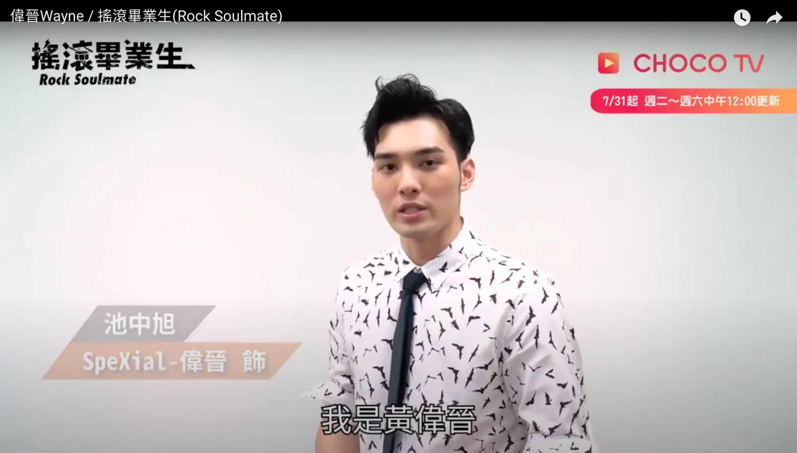

超級星光大道：2009年，參與過第六屆的《超級星光大道》獲得第八名的成績
Spexial：2012年至2019年間，擔任團體SpeXial主唱。同期參與多部《終極系列》作品的演出，飾演該系列主要角色「止戈」。
2014年4月11日，推出首支獨唱單曲《換一個心動》，為劇集《終極X宿舍》之插曲。
2017年下半年，在參與台灣偶像劇《搖滾畢業生》擔任男主角「池中旭」，並負責演唱劇中多首插曲。拍攝期間，與同劇演員、新加坡籍歌手邱鋒澤共同創作單曲《斷訊》，於同年11月1日推出。並於12月10日推出《斷訊》抒情版本。
2018年1月，加入《娛樂百分百》擔任主持工作。
2018年3月23日，偉晉生日當天在Facebook宣布即將在當兵前，於5月27日舉辦首次個人音樂會「黃偉晉灰%音樂會」。
2018年9月3日至2019年8月12日入伍當兵，退伍後在9月19日宣布已與可米合約結束，正式退出SpeXial。